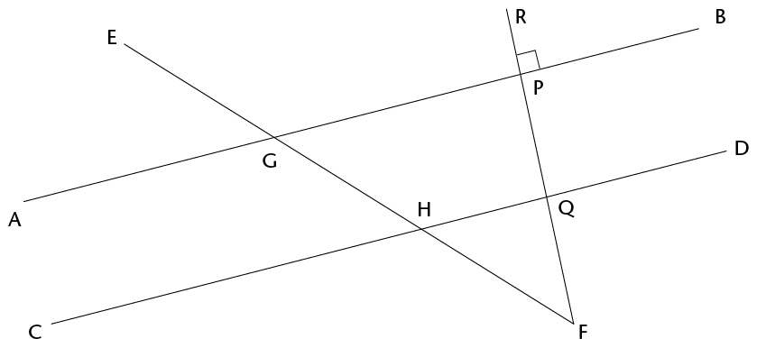
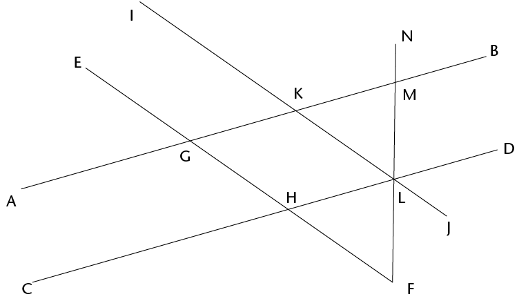

Hoofstuk 12
Meetkunde van reguit lyne
In Graad 8 het jy verbande tussen hoeke op reguit lyne geïdentifiseer. In hierdie hoofstuk sal jy al die verbande tussen hoeke hersien en duidelike beskrywings van hulle neerskryf.
12.1 Verbande tussen hoeke
Onthou dat 360\(^\circ\) een volle rotasie is
As jy na iets kyk en dan heeltemal in die rondte draai sodat jy weer daarna kyk, het jy deur ’n hoek van 360\(^\circ\). gedraai. As jy net halfpad omdraai sodat jy na iets kyk wat agter jou rug was, het jy deur ’n hoek van 180\(^\circ\) gedraai.
- Beantwoord die vrae oor die figuur.

- Is \(\hat{FOD}\) kleiner of groter as ’n regte hoek?
- Is \(\hat{FOE}\) kleiner of groter as ’n regte hoek?
In die figuur hier bo is \(\text{F}\)\(\hat{\text{O}}\)\(\text{D}\) + \(\text{F}\)\(\hat{\text{O}}\)\(\text{C}\)= die helfte van ’n omwenteling = 180\(^\circ\).
Die som van die hoeke op ’n reguit lyn is 180\(^\circ\).
Wanneer die som van hoeke 180\(^\circ\), is, word die hoeke supplementêr genoem.

- Hoe groot is \(\text{C}\)\(\hat{\text{M}}\)\(\text{B}\)?
- Waarom sê jy so?
- Hoe groot is \(\text{C}\)\(\hat{\text{M}}\)\(\text{P}\)
- Verduidelik jou redenasie.
- Hoe groot is hierdie hoeke?
- Hoe weet jy dit?

Wanneer een lyn twee gelyke hoeke vorm waar dit ’n ander lyn ontmoet, sê ons die twee lyne is loodreg op mekaar.
Omdat die twee gelyke hoeke hoeke op ’n reguit lyn is, is hul som 180°, dus is elke hoek 90°.

In hierdie hoofstuk moet jy goeie redes gee vir elke bewering wat jy maak.
- Lyk dit asof \(\text{C}\)\(\hat{\text{M}}\)\(\text{A}\) en \(\text{B}\)\(\hat{\text{M}}\)\(\text{D}\) ewe groot is?
- Kan jy verduidelik waarom hulle ewe groot is?
- Waaraan is \(\text{C}\)\(\hat{\text{M}}\)\(\text{A}\) +
\(\text{D}\)\(\hat{\text{M}}\)\(\text{A}\) geluk?
____________
Waarom sê jy so?
- Wat is \(\text{C}\)\(\hat{\text{M}}\)\(\text{A}\) +
\(\text{C}\)\(\hat{\text{M}}\)\(\text{B}\)? ____________
Waarom sê jy so?
- Is dit waar dat \(\text{C}\)\(\hat{\text{M}}\)\(\text{A}\) + \(\text{D}\)\(\hat{\text{M}}\)\(\text{A}\) = \(\text{C}\)\(\hat{\text{M}}\)\(\text{A}\) + \(\text{C}\)\(\hat{\text{M}}\)\(\text{B}\)
- Watter hoek kom aan albei kante van die vergelyking in (e) voor?
Probeer nou jou waarneming in vraag 5(a) verduidelik.
Wanneer twee reguit lyne sny, is die regoorstaande hoeke gelyk.

- As \(\text{B} \hat{\text{M}} \text{C}\) =
125\(^\circ\), hoe groot is AMD?
- Waarom sê jy so?
LYNE EN HOEKE
’n Lyn wat ander lyne sny, word ’n snylyn genoem.

In die patroon hier bo is AB ewewydig aan CD en EF || GH || KB || LD
- Hoeke a, b, c, d en e is ooreenkomstige hoeke. Lyk dit asof die ooreenkomstige hoeke ewe groot is?
- Ondersoek of die ooreenkomstige hoeke ewe groot is deur natrekpapier te gebruik.
Trek die hoek na wat jy met ander hoeke wil vergelyk en plaas dit bo-op die ander
hoeke om uit te vind of hulle ewe groot is. Wat merk jy op?
- Hoeke f, h, j, m en n is ook ooreenkomstige hoeke. Identifiseer al die ander groepe ooreenkomstige hoeke in die patroon ?
- Beskryf die posisie van ooreenkomstige hoeke wat gevorm word wanneer ’n snylyn ander lyne sny.
- Die volgende is pare verwisselende hoeke: g en o; j en s; en k en r. Lyk dit asof hierdie hoeke ewe groot is?
Ondersoek of die verwisselende hoeke ewe groot is deur natrekpapier te gebruik. Trek die hoek na wat jy wil vergelyk en plaas dit bo-op die ander hoek om uit te vind of hulle ewe groot is. Wat merk jy op?
- Identifiseer nog twee pare verwisselende hoeke.
- Gee ’n duidelike beskrywing van die relatiewe posisie van verwisselende hoeke wat gevorm word wanneer ’n snylyn ander lyne sny.
- Het jy iets opgemerk omtrent party van die pare ooreenkomstige hoeke toe jy die ondersoek in vraag 6 gedoen het? Beskryf jou bevinding.
- Hoeke f en o; i en q; en k en s is almal pare ko-binnehoeke. Identifiseer nog drie pare ko-binnehoeke in die patroon.

Die hoeke in dieselfde relatiewe posisie by elke snyding waar ’n reguit lyn twee ander lyne kruis, word ooreenkomstige hoeke genoem.
Hoeke aan verskillende kante van ’n snylyn en tussen twee ander lyne word verwisselende hoeke genoem.
Hoeke aan dieselfde kant van die snylyn en tussen twee ander lyne word ko-binnehoeke genoem.
HOEKE DEUR EWEWYDIGE LYNE GEVORM
Ooreenkomstige hoeke
Die lyne AB en CD hier onder ontmoet nooit nie. Jy weet reeds dat lyne wat nooit ontmoet nie en ’n vaste afstand van mekaar af is, ewewydige lyne genoem word. Ons skryf AB \(||\) CD.
Ewewydige lyne het dieselfde rigting, d.w.s. hulle vorm gelyke ooreenkomstige hoeke met enige lyn wat hulle sny.

Die lyn EF sny AB by G en CD by H.
EF is ’n snylyn wat ewewydige lyne AB en CD sny.
-
- Beskou \(\hat{\text{E} \text{G} \text{A}}\) en
\(\hat{\text{E} \text{H} \text{C}}\) in die figuur hier bo sorgvuldig. Hulle
word ooreenkomstige hoeke genoem.
Lyk dit asof hulle ewe groot is?
- Meet die twee hoeke om te kontroleer of hulle ewe groot is. Wat merk jy op?
- Beskou \(\hat{\text{E} \text{G} \text{A}}\) en
\(\hat{\text{E} \text{H} \text{C}}\) in die figuur hier bo sorgvuldig. Hulle
word ooreenkomstige hoeke genoem.
Lyk dit asof hulle ewe groot is?
- Gestel \(\text{E}\)\(\hat{\text{G}}\)\(\text{A}\) en \(\text{E}\)\(\hat{\text{H}}\)\(\text{C}\) is regtig ewe groot. Sal \(\text{E}\)\(\hat{\text{G}}\)\(\text{B}\) en \(\text{E}\)\(\hat{\text{H}}\)\(\text{D}\) dan ook ewe groot wees? Gee redes om jou antwoord te ondersteun.
- Dink jy die hoeke \(\hat{\text{A} \text{G} \text{F}}\) en \(\hat{\text{D} \text{H} \text{E}}\) moet ook verwisselende hoeke genoem word?
- Dink jy verwisselende hoeke is ewe groot? Ondersoek deur natrekpapier soos vroeër te gebruik of meet die hoeke akkuraat met jou gradeboog.
- Probeer verduidelik waarom verwisselende hoeke gelyk is wanneer die lyne wat gesny word ewewydig is. Hou in gedagte dat ooreenkomstige hoeke ewe groot is.
- Is \(\text{B}\)\(\hat{\text{G}}\)\(\text{H}\) en \(\text{D}\)\(\hat{\text{H}}\)\(\text{F}\) in die figuur ooreenkomstige hoeke?
-
- Wat kan jy sê van \(\text{B}\)\(\hat{\text{G}}\)\(\text{H}\) + \(\text{A}\)\(\hat{\text{G}}\)\(\text{H}\) Gee ’n rede
- Wat kan jy sê van \(\text{D}\)\(\hat{\text{H}}\)\(\text{G}\) + \(\text{C}\)\(\hat{\text{H}}\)\(\text{G}\)? Gee ’n rede.
- Is dit waar dat \(\text{B}\)\(\hat{\text{G}}\)\(\text{H}\) + \(\text{A}\)\(\hat{\text{G}}\)\(\text{H}\) = \(\text{D}\)\(\hat{\text{H}}\)\(\text{G}\) + \(\text{C}\)\(\hat{\text{H}}\)\(\text{G}\)? Verduidelik.
- Sal die vergelyking in (c) steeds waar wees as jy \(\text{B}\)\(\hat{\text{G}}\)\(\text{H}\) aan die linkerkant met \(\text{C}\)\(\hat{\text{H}}\)\(\text{G}\) vervang?
- Wat kan jy sê van \(\text{B}\)\(\hat{\text{G}}\)\(\text{H}\) + \(\text{A}\)\(\hat{\text{G}}\)\(\text{H}\) Gee ’n rede
Wanneer twee ewewydige lyne deur ’n snylyn gesny word, is die ooreenkomstige hoeke ewe groot.
Verwisselende hoeke
\(\text{B}\)\(\hat{\text{G}}\)\(\text{F}\) en \(\text{C}\)\(\hat{\text{H}}\)\(\text{E}\) hier onder word verwisselende hoeke genoem. Hulle is aan F en CH BG teenoorgestelde kante van die snylyn.

Wat merk jy op?
Wanneer ewewydige lyne deur ’n snylyn gesny word, is die verwisselende hoeke ewe groot.
Deur die volgende vrae te beantwoord behoort jy te kan sien hoe jy kan verduidelik waarom verwisselende hoeke gelyk is as ewewydige lyne deur ’n snylyn gesny word.
Wat weet jy van ooreenkomstige hoeke?

Ko-binnehoeke
Die hoeke \(\text{A}\)\(\hat{\text{G}}\)\(\text{H}\) en \(\text{C}\)\(\hat{\text{H}}\)\(\text{G}\) in die figuur hier onder word Ko-binnehoeke genoem. Hulle is aan dieselfde kant van die snylyn..
"ko-” beteken saam.

- Wat weet jy van \(\text{C}\)\(\hat{\text{H}}\)\(\text{G}\) + \(\text{D}\)\(\hat{\text{H}}\)\(\text{G}\)? Verduidelik.
- Wat weet jy van \(\text{B}\)\(\hat{\text{G}}\)\(\text{H}\) + \(\text{A}\)\(\hat{\text{G}}\)\(\text{H}\)? Verduidelik.
- Wat weet jy van \(\text{B}\)\(\hat{\text{G}}\)\(\text{H}\)+ \(\text{C}\)\(\hat{\text{H}}\)\(\text{G}\)? Verduidelik.
- Watter gevolgtrekking kan jy maak oor \(\text{A}\)\(\hat{\text{G}}\)\(\text{H}\) + \(\text{C}\)\(\hat{\text{H}}\)\(\text{G}\)?
Gee gedetailleerde redes vir jou gevolgtrekking.
Wanneer twee ewewydige lyne deur ’n snylyn gesny word, is die som van twee ko-binnehoeke 180\(^\circ\). ’n Ander manier om dit te sê, is dat die twee ko-binnehoeke supplementêris.
12.2 Identifiseer en benoem hoeke
- In die figuur hier onder is die lyn RF loodreg op AB.

- Is RF ook loodreg op CD? Regverdig jou antwoord.
- Noem vier pare supplementêre hoeke in die figuur. Sê in elke geval hoe jy weet dat die hoeke supplementêr is.
- Noem vier pare ko-binnehoeke in die figuur.
- Noem vier pare ooreenkomstige hoeke in die figuur
- Noem vier pare verwisselende hoeke in die figuur.

- Indien dit gegee word dat RF loodreg op AB is, sal RF ook loodreg wees op CD? Regverdig jou antwoord.
- Noem al die pare supplementêre hoeke in die figuur. Sê in elke geval hoe jy weet dat die hoeke supplementêr is.
- Gestel \(\text{E}\)\(\hat{\text{G}}\)\(\text{A}\) = x. Gee die grootte van soveel hoeke in die figuur as wat jy kan in terme van x. Gee elke keer ’n rede vir jou antwoord.
12.3 Los probleme op
- Lynstukke AB en CD in die figuur hier onder is
ewewydig. EF en IJ is ook ewewydig. Merk hierdie
feite op die figuur en beantwoord dan die vrae.
Wanneer jy probleme in meetkunde oplos, kan jy ’n snelskrifmanier gebruik om jou redes te skryf. As twee hoeke byvoorbeeld ewe groot is omdat hulle ooreenkomstige hoeke is, kan jy (corr \(\angle\)e, AB \(||\) CD) as die rede skryf.

- Noem vyf hoeke in die figuur wat gelyk is aan \(\text{G}\)\(\hat{\text{H}}\)\(\text{D}\) .Gee ’n rede vir elkeen van jou antwoorde.
- Noem al die hoeke in die figuur wat gelyk is aan \(\text{A}\)\(\hat{\text{G}}\)\(\text{H}\) . Gee ’n rede vir elkeen van jou antwoorde.

Bepaal die grootte van soveel hoeke in die figuur as wat jy kan en gee redes.
- Bepaal die grootte van soveel hoeke in die figuur as wat jy kan en gee redes.
- Is EF en CD ewewydig? Gee redes vir jou antwoord.